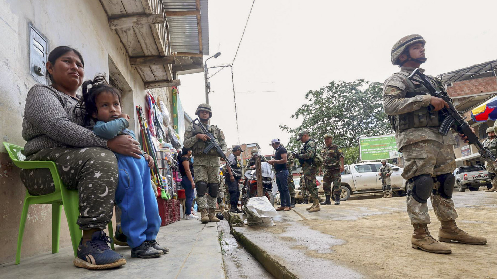

SOCIEDAD

Un testigo que presenció la agresión sufrida el pasado mes de octubre por guardias civiles aseguró este viernes que el día de los hechos muchas personas del citado barrio participaron en los disturbios. Asimismo, fuentes del caso informaron que el juzgado continúa tomando declaraciones para esclarecer lo ocurrido.
Las investigaciones continúan y se espera identificar a los responsables de los disturbios. Los hechos ocurrieron cuando vecinos comenzaron a lanzar objetos contra agentes de seguridad, generando enfrentamientos en la zona.
Autoridades indicaron que el caso sigue en investigación y no se descartan nuevas detenciones en los próximos días.
Durante el trabajo de campo, los agentes de la Divincri de Trujillo detectaron que la ruta que tomaron los asesinos conducía a la única garita de control de la mina Porfía. Las cámaras de vigilancia de la zona identificaron a una patrulla mixta compuesta por efectivos del Ejército y de la Dirección de Operaciones Especiales (Diroes). El grupo, al mando del capitán Edwar Diaz Cieza, pasó por la garita antes y después del asesinato de Jolvi Rodríguez. Los agentes de la Divincri de Trujillo no descartan que miembros del Ejército y de la Diroes de la PNP estén vinculados con el asesinato de Jolvi Rodríguez. La investigación sigue en curso. El fiscal Limber Mallqui ha programado el interrogatorio a los militares y policías que fueron captados por las cámaras en un lapso en el que fue ejecutado Jolvi Rodríguez.